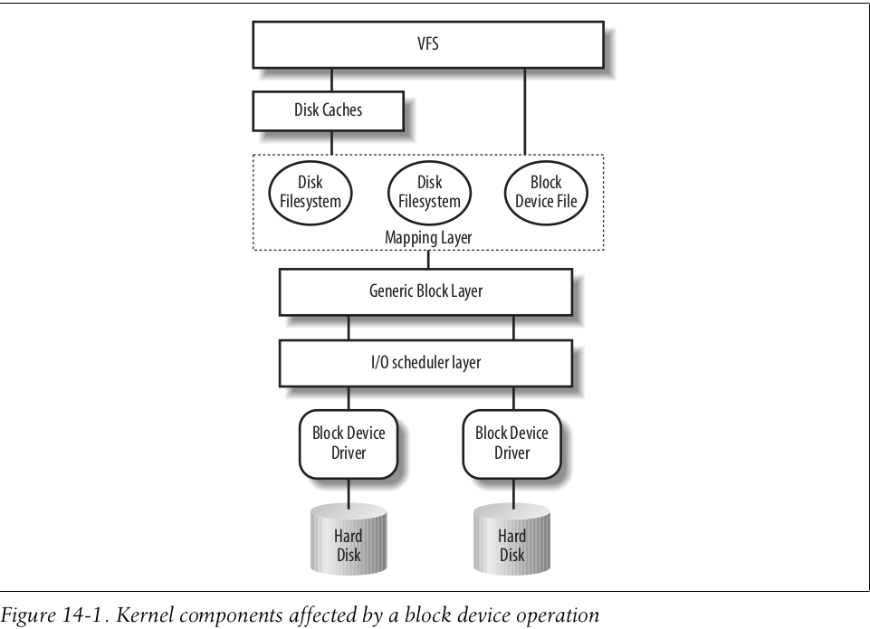
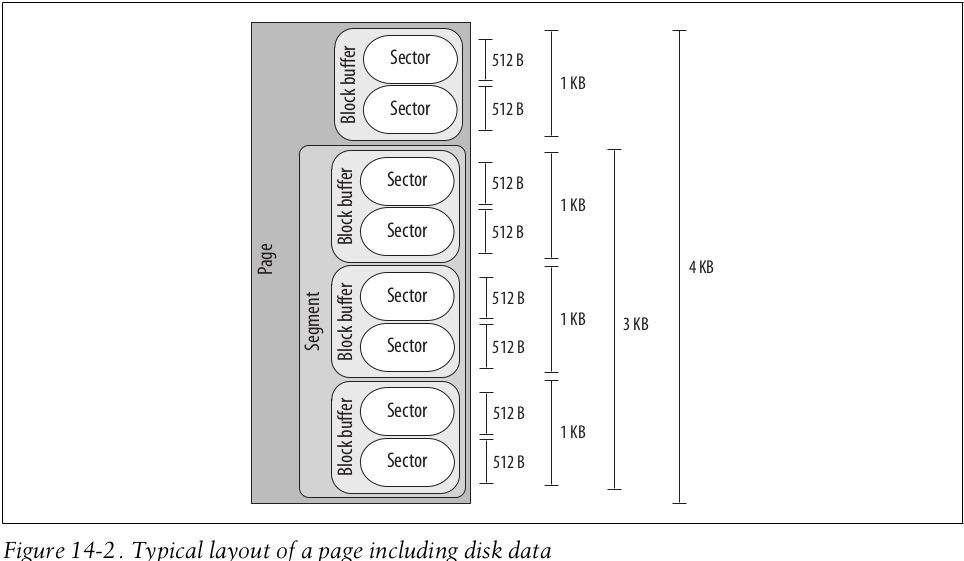

linux内核学习-十
前言
这篇博客主要介绍一下块设备的I/O驱动程序
块设备主要的特点是CPU和总线读写数据所花的时间，与磁盘硬件的速度不相匹配。为了解决该问题，Linux内核使用了相当复杂的结构来抽象块设备，从而提高块设备的性能
块设备模型
Linux内核将块设备抽象为如下图所示的组织层次

下面是read系统调用中各个组织层次的基本处理过程
- read系统调用的服务例程调用一个合适的VFS函数，将文件描述符和文件内的偏移量传递给该函数即可。这里在强调一下，VFS位于块设备模型的上层，其提供了一个通用的文件模型，Linux支持的所有文件系统皆采用该模型
- VFS函数根据实际情况(要读取内容是否已经缓冲到磁盘高速缓存)，与磁盘或磁盘高速缓存进行交互
- 这篇博客主要研究块设备的I/O驱动程序，则仅仅研究从磁盘中读取数据的情况。此时，VFS函数需要mapping layer(依赖层)，通过如下步骤确定数据实际的物理地址
- 文件被拆分成许多块进行管理，因此mapping layer会确定请求数据所在的块号
- mapping layer调用具体文件系统的函数，通过访问文件的磁盘节点，根据逻辑块号确定所在磁盘上的位置。这里实际上有点类似于页表的虚拟地址和物理地址的映射，抽象的文件和实际的磁盘都被拆分成许多块进行管理。则访问文件块的内容时，需要转换为磁盘上的对应块来访问
- 在获取了数据在磁盘上的实际位置后，内核通过generic block layer，使用I/O操作来完成数据访问。一般而言，每次I/O操作使用struct bio结构来描述，并处理磁盘上一组连续的块，所以generic block layer可能启动多次I/O操作完成一次的数据处理(数据不一定位于相邻的块)。
- 为了提供性能，I/O scheduler layer会将generic lbock layer发出的I/O操作，按照预先定义的内核策略进行归类，将物理介质上相邻的数据请求聚集在一起
- 最后，块设备驱动程序向磁盘控制器的硬件接口发送适当的命令，从而完成最终实际的磁盘的访问
实际上，上述过程中，涉及到了许多不同的抽象结构，自下到上如图所示
- 硬件快设备控制器采用sector(扇区)的固定长度的块来传送数据。因此I/O scheduler layer和I/O驱动程序需要维护扇区
- VFS、mapping layer和文件系统将磁盘数据存放在称为block(块)的逻辑单元中。一个块对应文件系统中一个最小的磁盘存储单元
- 块设备驱动程序还应当能够处理抽象的segment(段)——一个segment就是一个内存夜或内存页的一部分，其包含磁盘上物理相邻的block
- 磁盘高速缓存作用于磁盘数据的page(页)，每页正好装在一个页框上
实际上，上述数据的一般组织逻辑如下所示

sector
为了达到可接受的性能，块设备的每次数据传送操作都作用于一组称之为扇区的相邻字节。
在大部分块设备中，扇区的大小是512字节。需要明确的是，扇区是数据传送的基本单元，不允许传送少于一个扇区的数据
因此，对存放在块设备的一组数据是通过其在磁盘上的位置来标识的——其首个512字节扇区的下标以及扇区的数目。扇区的下标存放在类型为sector_t类型的变量中
block
扇区是硬件设备传送数据的基本单位，而块是VFS和文件系统传送数据的基本单位。
在Linux中，块设备的块大小可以指定，但块大小必须是2的幂，并且不能超过一个页框，且为扇区大小的整数倍。
每个块都需要自己的块缓冲区，其是内核用来存放块内容的RAM内存区。当内核从磁盘读出一个块时，就用从硬件设备中获取的值填充相应的块缓冲区；同样，当向磁盘中写入一个块时，就用相关块缓冲区的实际值来更新硬件设备上一组相邻的字节。
块缓冲区由struct buffer_head结构来管理，其包含了内核处理缓冲区所需要的所有信息。其关键的字段如下所示
| 类型 | 字段名称 | 描述 |
|---|---|---|
| struct page * | b_page | 块缓冲区所在页框的页描述符地址 |
| char * | b_data | 如果对应页框位于高端内存，该字段为缓冲区在页框的偏移量 如果对应页框不位于高端内存，该字段存放缓冲区的线性地址 |
| sector_t | b_blocknr | 缓冲区数据对应的逻辑块号 |
| struct block_device * | b_bdev | 使用该缓冲区的块设备 |
segment
实际上，段是块设备驱动程序传送数据的基本单位
Linux内核对块设备的每个I/O操作，就是在块设备与一些RAM单元之间相互传送一些相邻扇区的内容。大多数情况下，磁盘控制器直接采用DMA方式进行数据传送。而一般DMA传送的是磁盘上相邻扇区的数据(否则传送效率过低)。而一个段就是一个内存页或内存页中的一部分，其包含一些相邻磁盘扇区中的数据
generic block layer
通用块层加工从系统向块设备发出的请求，从而向内核提供统一接口，并提高块设备的访问性能
struct bio
通用块层的核心数据结构是位于include/linux/blk_types.h的struct bio描述符。其用来描述内核对块设备的一次I/O请求操作，其关键字段如下所示
| 类型 | 字段名称 | 描述 |
|---|---|---|
| struct bio * | bi_next | 请求队列中的下一个struct bio |
| struct block_device * | bi_bdev | 指向操作的块设备描述符的指针 |
| unsigned short | bi_flags | struct bio的状态标志 |
| unsigned short | bi_vcnt | struct bio的bio_vec数组中segment的数目 |
| struct bvec_iter | bi_iter | struct bio的bio_vec数组中segment的当前迭代位置 |
| unsigned int | bi_max_vecs | struct bio的bio_vec数组中允许的最大段数 |
| struct bio_vec * | bi_io_vec | 指向struct bio的bio_vec数组中的段 |
| bio_end_io_t* | bi_end_io | struct bio的I/O操作结束时调用的函数指针 |
| atomic_t | __bi_cnt | struct bio的引用计数器 |
| void * | bi_privae | generic block layer和块设备驱动程序的I/O完成时使用该指针 |
struct bio_vec
根据前面的分析，块设备驱动程序传送数据的基本单位是segment，因此struct bio的bio_vec数组的每一个元素描述一个segment。其元素类型是位于include/linux/bvec.h的struct bio_vec类型，其重要字段如下所示
| 类型 | 字段名称 | 描述 |
|---|---|---|
| struct page * | bv_page | 指向segment所在的页框的页描述符 |
| unsigned int | bv_len | 段的字节长度 |
| unsigned int | bv_offset | 页框中段数据的偏移量 |
可以看出，通过struct bio结构和其bio_vec类型的字段，其可以很好的描述内核的块设备I/O请求，并且可以方便的传递给块设备驱动程序
struct gendisk
磁盘是一个由generic block layer处理的逻辑块设备，通常一个磁盘对应一个硬件块设备或一个虚拟设备。内核使用位于include/linux/genhd.h的struct gendisk结构来描述磁盘，其重要的字段如下所示
| 类型 | 字段名称 | 描述 |
|---|---|---|
| int | major | 磁盘主设备号 |
| int | first_minor | 与磁盘关联的第一个次设备号 |
| int | minors | 与磁盘关联的此设备号范围 |
| char [DISK_NAME_LEN] | disk_name | 磁盘的标准名称 |
| struct block_device * | part0 | 磁盘的分区描述符 |
| const struct block_device_operations * | fops | 指向块设备的操作表的指针 |
| struct request_queue * | queue | 指向磁盘请求队列的指针 |
| void * | private_data | 块设备驱动程序的私有数据 |
| int | flags | 描述磁盘类型的标志 |
| struct timer_rand_state * | random | 记录磁盘中断的定时；由内核内置的随机数发生器使用 |
| atomic_t | sync_io | 写入磁盘的扇区数计数器 |
struct block_device
实际上，硬盘通常被划分成几个逻辑分区。每个块设备文件要么代表整个硬盘，要么代表硬盘中的某一个分区。一般而言，硬盘中的分区是由连续的次设备号来区分。
如果将硬盘划分成了几个分区，那么其分区表保存在位于include/linux/blk_types.h的struct block_device结构的数组中，该数组存放在struct gendisk对象的part0字段中，其重要的字段如下所示
| 类型 | 字段名称 | 描述 |
|---|---|---|
| sector_t | bd_start_sect | 磁盘中分区的起始扇区 |
| sector_t | bd_nr_sectors | 分区的扇区长度 |
| bool | bd_read_only | 如果分区是只读的，则设置为1，否则为0 |
| u8 | bd_partno | 磁盘中分区的相对索引 |
I/O scheduler layer
虽然块设备驱动程序一次可以传送一个单独的扇区，但是块I/O层并不会为磁盘上每个被访问的扇区都单独执行一次I/O操作，而会尝试把几个扇区合并在一起，并作为一个整体进行处理，从而减少磁头的平均移动时间
当某进程产生磁盘数据的访问时，内和组件创建块设备的请求时，块设备驱动程序将该请求加入对应的请求队列中，并将该进程挂起。然后generic block layer会异步调用I/O scheduler layer选择一个新的块设备请求或拓展一个已有的块设备请求，并激活相关的块设备驱动程序调用所谓的strategy routine处理该块设备请求
struct request_queue
linux内核使用位于include/linux/blkdev.h的struct request_queue结构来描述I/O请求队列。关键字段如下所示
| 类型 | 字段名称 | 描述 |
|---|---|---|
| struct request * | last_merge | 指向队列中首先可能合并的队列请求描述符 |
| struct elevator_queue * | elevator | 指向elevator对象的指针 |
| void * | queuedata | 指向块设备驱动程序的私有数据指针 |
| unsigned long | queue_flags | 描述请求队列状态的标志 |
| spinlock_t | queue_lock | 指向请求队列锁的指针 |
| struct list_head | requeue_list | I/O请求队列 |
可以看出，I/O请求队列是一个双向链表，其元素就是struct request(请求描述符)，被存放在struct request_queue的requeue_list字段
struct request
每个块设备的待处理请求都是使用位于include/linux/blk-mq.h的struct request请求描述符描述的。其关键字段如下所示
| 类型 | 字段名称 | 描述 |
|---|---|---|
| struct request_queue * | q | I/O请求队列的指针 |
| sector_t | __sector | 要传送的下一扇区号 |
| struct bio * | bio | 请求中第一个没有完成传送操作的bio |
| struct bio * | biotail | 请求中最后一个bio |
实际上，每个请求描述符中包含一个或多个struct bio结构。最开始，generic block layer创建一个仅包含一个struct bio结构的请求；然后I/O调度程序要么向初始的struct bio中新增加一个新段，要么将另一个struct bio链接到请求中。
块设备驱动程序
块设备驱动程序时Linux块子系统中的最底层组件，其从I/O调度程序中获得请求，然后按照相关的要求处理这些请求。
实际上，每个块设备驱动程序对应一个struct device_driver类型的描述符；设备驱动程序处理的每个磁盘都与一个struct device描述符相关联。
struct block_device
Linux内核使用位于include/linux/blk_types.h的struct block_device来描述描述块设备。其关键字段如下所示
| 类型 | 字段名称 | 描述 |
|---|---|---|
| dev_t | bd_dev | 块设备的主设备号和次设备号 |
| struct inode * | bd_inode | 指向bdev文件系统中块设备对应的文件索引节点的指针 |
| int | bd_openers | 统计块设备被打开了多少次 |
| void * | bd_holder | 块设备描述符的当前所有者 |
| int | bd_holders | 统计bd_holder字段设置的次数 |
| struct gendisk * | bd_disk | 指向块设备中基本磁盘的gendisk结构的指针 |
注册和初始化设备驱动程序
自定义驱动程序描述符
首先，设备驱动程序需要自定义一个描述符，包含驱动硬件设备所需要的数据。该描述符存放每个设备的相关信息，注入操作设备时使用的I/O端口、设备发出中断的IRQ线、设备的内部状态等。
预定主设备号
设备驱动程序必须自己预定一个主设备号。传统上，可以通过register_blkdev()函数实现
初始化自定义描述符
在使用驱动程序之前，必须适当地初始化前面自定义的描述符。即按照依赖关系，依次初始化自定义描述符的各个字段。
初始化gendisk描述符
即初始化驱动程序关联的struct gendisk描述符的一些字段。
将初始化的自定义描述符的地址存放到struct gendisk的private_data字段中，从而让I/O子系统可以快速的找到块设备对应的驱动程序描述符
分配和初始化请求队列
为设备驱动程序建立一个请求队列，用于存放等待处理的请求，可以通过调用blk_init_queue等函数轻松地完成请求队列的建立
设置中断处理程序
设备驱动程序还需要为设备注册IRQ线，可以通过调用request_irq函数完成操作
注册磁盘
最后，当设备驱动程序的所有数据结构已经准备好，则初始化阶段的最后一步就是注册和激活磁盘可以简单的通过调用add_disk函数完成